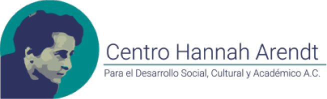

Nosotros
Centro Hannah Arendt
Lo que hacemos
Nuestros objetivos
Programas
Cursos y Talleres
Proyectos Comunitarios
Actividades del Mes
Logros
Nuestros Logros
Beneficiarios
Informes
Colabora
Talleristas y Profesores
Valuntarios
Servicio Social